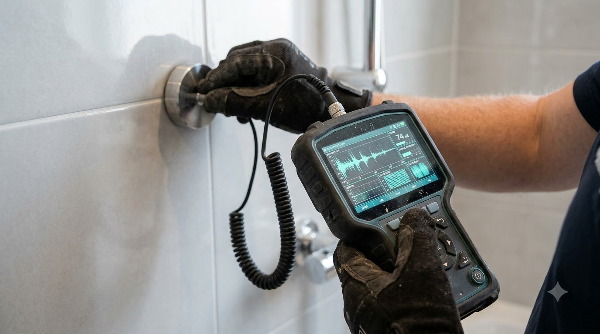

Category 01
Leak Detection & Pipe Repair
Unaddressed plumbing leaks can cause severe moisture damage, structural dampness, and elevated water bills. Our approach involves pinpointing the exact origin of water escape before undertaking clean, targeted pipe repairs.
Common Problems Handled:
- ✓ Visible pipe leaks
- ✓ Dripping taps & faucets
- ✓ Pipe joint leaks
- ✓ General plumbing inspections
- ✓ Pipe replacement enquiries
- ✓ Concealed dampness checks
Typical Service Scope: Visual line inspection, acoustic or pressure testing of supply lines, joint tightening, section replacement with compatible piping, and pressure verification.
Request Leak Service